 

COMPUTADOR EMBARCADO
O computador embarcado, é a unidade responsável por controlar todos os outros subsistemas do satélite. É com ele que gerenciamos as interações entre o software e hardware do sistema. Nosso computador de bordo é composto por um ESP32 embutido em uma placa feita pela PION Labs